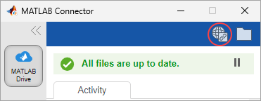

Access Files in Your MATLAB Drive
You can access your MATLAB® Drive™ files and folders in MATLAB Drive online. If MATLAB Connector is installed, you also can access your MATLAB Drive files and folders on your system.
MATLAB Drive operates like any other folder, with the significant advantage that files can be synced with any other MATLAB Drive folder, such as in MATLAB Drive online or on another computer that uses MATLAB Connector.
Access Files in MATLAB Drive Online
You can access your files and folders in MATLAB Drive online.
To open MATLAB Drive online, from your web browser, navigate to MATLAB Drive and sign in with your MathWorks® credentials. Alternatively, if you have MATLAB Connector installed and running, open the Connector and click the MATLAB Drive online button in the top-right corner of the window.

This table describes several actions that you can take on your files and folders in MATLAB Drive online.
| Action | Instructions |
|---|---|
| Preview a file or folder | You can preview files including MATLAB code files, text files, image files, and audio files. To preview a file, double-click it or select the file and then click View. To preview a file in a new tab, click View in New tab. If the file you want to preview is too large or has a file type that is not supported for previewing online, MATLAB Drive online prompts you to download the file. |
| Open a file | You can open and edit files in MATLAB Online™. To open a file, select it and then click Open in MATLAB Online. |
| Download a file or folder | To download a file or folder from MATLAB Drive online to your desktop, select the file or folder and then click Download. MATLAB Drive online saves the file or folder in your system's default downloads folder. To download multiple files at once, select the files that you want to download and then click Download. Downloading multiple folders or a combination of files and folders at once is not supported. When you download a folder, MATLAB Drive online saves it as a zip file. If you attempt to download a large folder and the download fails, reduce the size of the folder and then try again. Changes made to downloaded files are not synced to your MATLAB Drive. |
| Rename a file or folder | To rename a file or folder, select it and then click Rename. |
| Move a file or folder | To move a file or folder, select it and then click Move To. A dialog box opens and prompts you to select an existing folder or create a new folder to move the file or folder to. If no selection is made, the file or folder is moved to the current folder. |
| Copy a file or folder | To copy a file or folder, select it and then click Copy To. A dialog box opens and prompts you to select an existing folder or create a new folder to copy the file or folder to. If no selection is made, the file or folder is copied to the current folder. |
| Delete a file or folder | To delete a file or folder, select it and then click Delete. Deleting a file or folder moves it to the Deleted Files folder. For more information, see Restore Deleted Files in MATLAB Drive Online. |
Access Files on Your System
If you have MATLAB Connector installed, you can access your MATLAB Drive files and folders from your system file browser and from MATLAB.
Access Your Files From Your System Browser
In your system file browser, select the MATLAB Drive folder.
Alternatively, if MATLAB Connector is running, click the MATLAB Drive folder button from within the Connector.
Access Your Files From MATLAB
In the Files panel, select the MATLAB Drive folder. You also can click the MATLAB Drive button on the Current Folder toolbar.
Clicking the MATLAB Drive button in the Current Folder toolbar also starts MATLAB Connector if it is installed but not running. If the MATLAB Drive button is not on the Current Folder toolbar, you can add it by right-clicking the toolbar and selecting Customize. Then, in the MATLAB Toolbar Settings Controls section, select Access MATLAB Drive files on this computer and click OK. MATLAB adds the button to the toolbar.
To open your MATLAB
Drive folder programmatically, use the matlabdrive
function.
Sync Files with MATLAB Drive
When you edit a file in the MATLAB Drive folder, you are editing a local copy of the file. MATLAB Drive updates the files in the cloud with the changes you make locally. Because MATLAB Drive stores a local copy of files on each computer that has MATLAB Connector installed, you can access these files when offline or when syncing is paused. File syncing resumes when MATLAB Connector is running and an internet connection is available, or when syncing is resumed.